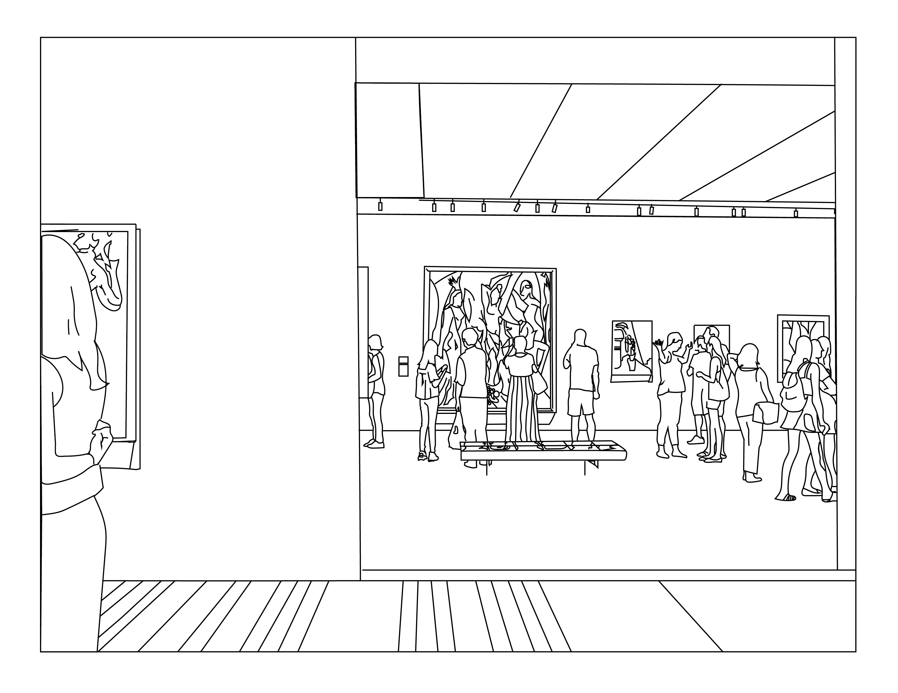
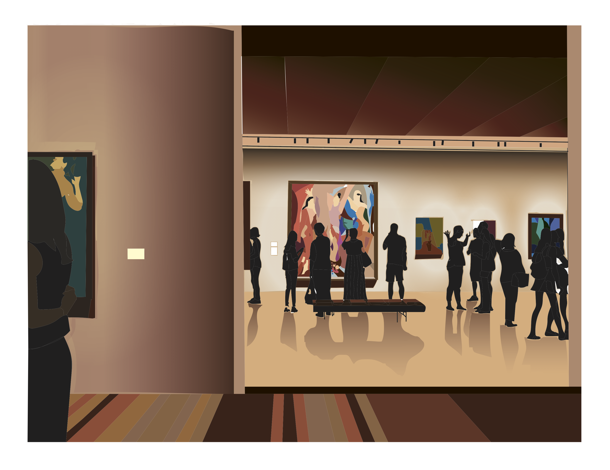
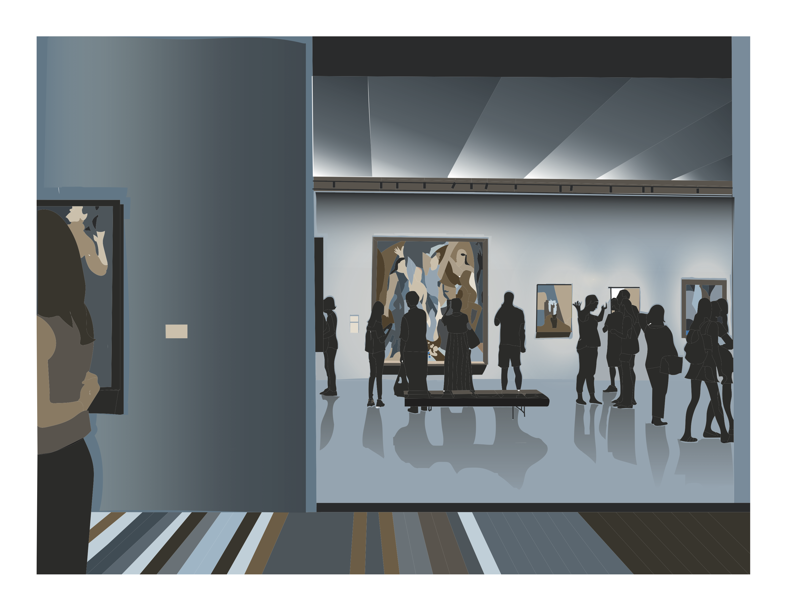
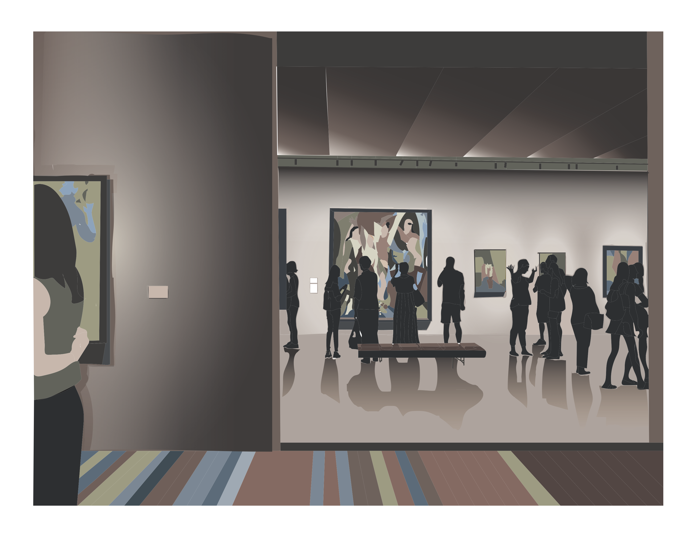
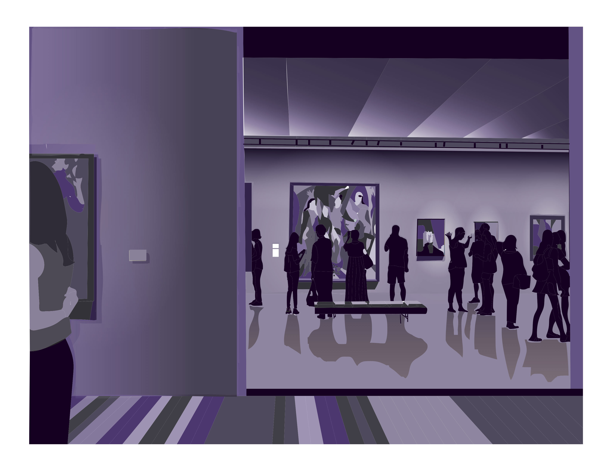

I L L U S T R A T O R P I E C E
A Trip to MoMA
My first project using Adobe Illustrator!
Role
- Designer
Tools Used
- Adoble Illustrator
Duration
- 1 week
O V E R V I E W
Challenge
The challenge was to create an original image that explored two point perspective and various color relationships.
P R O C E S S
Concept
I took a picture while visiting the MoMa during the summer that I wanted to use for this assignment. I felt that the colors in both the art in display as well as background setting and light had a lot of room for play with color!
Process
I first drew out the image on Illustrator using the pen and pencil tool. After this, I filled in four different versions of the image with different color themes.
F I N A L P R O D U C T
   